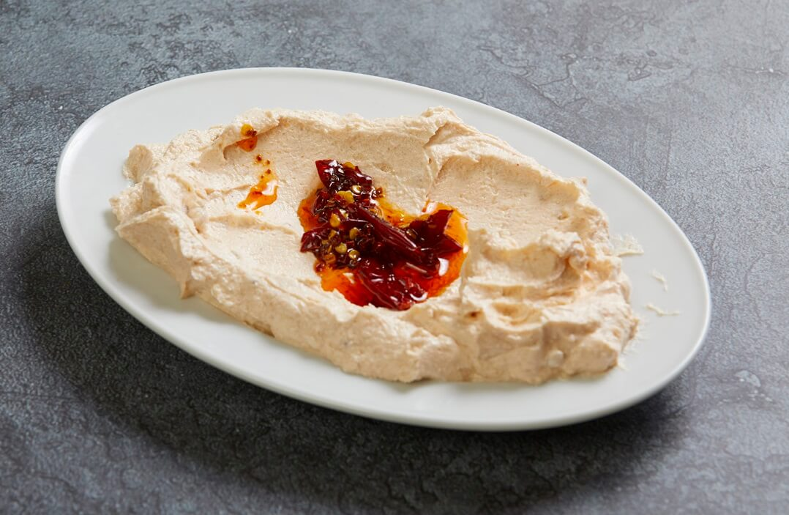

It is named Atom because it is made with the hottest peppers in Turkish cuisine. As you may know; consuming hot peppers have an appetite enhancement effect and for this reason, most restaurants offer Atom meze on their menu.
In Turkey, we are using Cayenne Peppers or in Turkish Arnavut Bibeberi type of pepper to make this meze. This pepper has a decent eatable Scoville heat level. Its Scoville heat level is between 30.000 and 50.000 and this Scoville heat level is fair enough to let you enjoy this amazing meze variety.
Atom meze variety originates from Izmir city of Turkey. When we think about the hot mezes of Turkey, the first cities that come up to our mind are Adana city, Gaziantep city, Hatay city, and Urfa city. Those cities are located in the south and southeast part of Turkey. However; this Atom meze belongs to the Aegean part of Turkey.